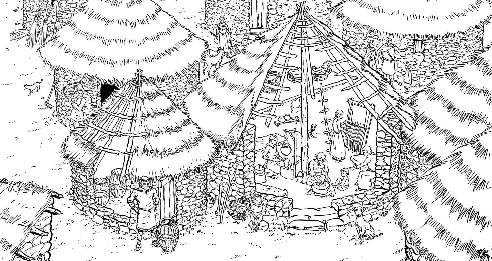
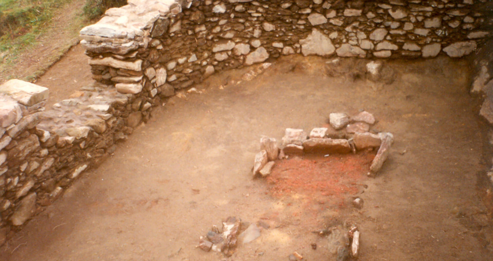
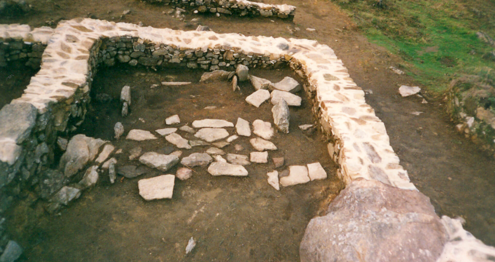

La
vivienda era el lugar donde cada familia dormía, comía y se guarecía,
pero además podía realizar otras tareas como fabricar útiles, tejer
etc. En una casa vivía una familia extensa, quizás dos o tres
generaciones, se calcula una media de seis personas por casa.
No todas las construcciones encontradas en la croa de este castro
debieron funcionar como viviendas, algunas debieron ser anexos,
almacenes o talleres.

Actualmente solo se conservan los cimientos y los arranques de las
paredes de piedra de las estructuras que, en origen, podrían alcanzar
una altura de 4 metros (incluida la techumbre). En el interior de las
casas se encontraban los hogares que estaban situados en su mayor parte
en la zona central de la casa y que servían para iluminar la estancia,
calentarla y cocinar. En Borneiro estos hogares están especialmente
bien conservados y casi todos responden a un mismo modelo: piedras
hincadas verticalmente que delimitan una zona rectangular donde se hace
el fuego. Estas piedras protegían del fuego el poste que servía para
sostener las cubiertas.

Hogar
encontrado en una vivienda
Los techos eran de materiales vegetales entrelazados (ramas o
paja), tendrían forma cónica para las estructuras circulares y a
una o dos aguas para las cuadrangulares. Los suelos podían ser de
piedra o enlosado de piedra pero lo más frecuente eran suelos de
arcilla endurecida que se iba reparando. Las casas tendrían alguna
pequeña ventana y una puerta de madera.

Enlosado aparecido en una de las
cabañas
¿Te has fijado en que no todas las construcciones tienen
puertas?
Esto se debe a que no se han podido identificar durante la excavación
el hueco de las puertas, lo que tal vez signifique que estaban más
elevadas, accediéndose a ellas a través de peldaños. o de una rampa de
madera.
Algunas de las viviendas de Borneiro están dispuestas alrededor de
espacios abiertos que serían los antecedentes de los barrios que surgen
claramente en algunos castros hacia el cambio de era. Estos barrios
estaban formados por construcciones domésticas y alpendres en torno a
un patio, todos ellos rodeados por un cierre de piedra.